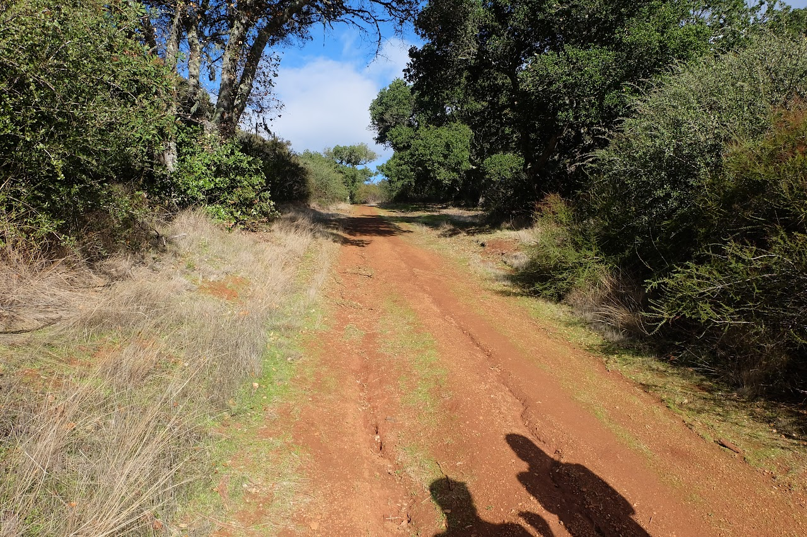

Live → Blog
December 16, 2019

If you follow me, my writings, or my legend, you know I seem to be obsessed with new beginnings. I love setting new goals and striving to reach them. Of course the journey of life is never linear. For this reason, I often find myself having to reset and restart on the journey. Perhaps after a setback or some apparently unexplainable loss of motivation. Those of you who have the privilege to follow my WhatsApp status can attest to my brief reflections on starting over, turning a new leaf, or closing a door. This is one such post. Today I went hiking with two of my friends at the Foothills Park here in Palo Alto. The last time I went there was in the summer, when the temperatures were nice and toasty. Informed by that memory, I chose to wear shorts and my Stanford Engineering shirt that I have modified into a muscle top. That was a bad decision. We are in the middle of winter and out there in the wilderness, deep under tree cover, I nearly froze to death. I was saved by my friend's cardigan - which was so becoming on me that I received compliments that I looked like a cool grandma - and an occasional ray of sun. We did the best we could even under those freezing conditions: dancing when we could, pausing to admire the beauty that surrounded us, and having mini photo shoots as we went. So do not imagine we were miserable in that cold. Even so, nothing could beat the joy in our hearts when we found a clearing with an abundance of sun and warmth. We deviated from our path to this one. It was beautiful. I think of it as a perfect metaphor to describe this quarter that is drawing to a close.
In September when I started the academic year, I was filled with hope and fresh energy for this next chapter: graduate school. I did not underestimate that it would be an adjustment, but I felt this was going to be the time to shine. The time to invest in my professional advancement. I felt I had enough progress in the other 3 priority areas. Then out of nowhere came the storm. I learned that I was "trending" on social media because an individual had decided to soil my name and broadcast uninformed accusations about me. Accusations of alleged events that this person only knows of secondhand. Accusations that go against the principles of the person I aspire to be. Accusations that undermine the journey I have been on since the summer of 2018 to unlearn the toxic elements of my socialization as a straight male in a patriarchal world. I would be lying if I claim those accusations did not get to me. The worst part was I could not clear my name. I am not claiming that I have never engaged in behavior that might warrant these kinds of accusations, in fact my resolution to detoxify my masculinity was born when I learned that an interaction with a friend had caused her some discomfort. Instead, I was frustrated that the world would never hear my side of the story. More so since my efforts to use institutional structures to report this defamation did not lead anywhere, as the person was said to be mentally unwell. But I was not surprised. Trying to move on with my life after this was hard.
New beginnings are meant to be inspiring, full of green grass and flowers blossoming everywhere. But with this one, I had to balance my new responsibilities as a Teaching Assistant in a big class and my school coursework with dealing with this crazy issue. (I have debated my use of the word crazy here, and have decided to stick with it). It is insane how with social media, anyone can write anything and it can destroy a reputation. Even with the knowledge that this person was struggling mentally, each time I walked into the African community I could not help but imagine people wondered if there was some truth to the allegations. I know I would have wondered. In all, the person wrote about me over a span of a few days and was done. But I had to deal with the aftermath of that for long after. I am still dealing with the aftermath even now. The first way this got to me was the realization of how unimportant it is to care about what people think of you. I think since I knew I wanted to be "important", I have always curated my public image. But to see how it could just be tainted with a few characters, it made me wonder if any of these principles I aspire to build my life on mean anything. If they matter at all. I mean this individual was never my friend, so she did not know me at all. Yet she could take some hearsay and just like that taint this image that I was building. What was the point? This quarter has been hard because of this, but I am grateful to the people in my corner and my therapist for all they do to keep me going.
In total, I violated 8 out of the 12 guiding principles of my current Life Plan. From the least consequential one of skipping my journaling sessions to the destructive ones of not getting sufficient rest to imprudent cash flow management. My priorities in this period were misaligned and I had to put a pause on my job search because there was just too much on my plate to handle. It was a dark time. It was cold, like earlier on that hike. But I did the best I could. Thanks primarily to my friend MC, I was able to keep my head above water in my classes. I was not performing at my best, but at least I was afloat. But I also made terrible choices, and am grateful to my friend ND for never sugar coating when I mess up. I have watched more television this past quarter than I have in all of the 4 years I was at Stanford. Ellen Pompeo made $20 million per season of those episodes on which I have wasted my life. Imagine! Just because somebody who does not matter wrote things that are not even true, and I throw away my life like that? In the time I wasted hiding behind my television, I could have killed it in my classes, secured my job for next summer, and made progress on Project X. But here we are, writing this blog post.
If I have learned anything from this experience, is that these principles that I have elected to base my life on are for me. They are not for you, and not for the world. I cannot control what the world thinks of me, and I should not try to, but what I think of me matters a whole lot more. This enlightenment is like that moment earlier on the hike when we came to a spot with abundant warmth and sunshine. Clarity! I am blessed with opportunities that many can only dream of, and I would never forgive myself if I keep wasting them like this. Primarily because of MC, I have done fairly well in my classes this quarter. But the Ramarea standard of excellence does not do "fairly well", we do "above and beyond". I am grateful that I have taken the time to define those 12 principles on which to govern my Life Plan. As ND said, the only way to show I have learned something is to do better. I should not be violating any of the 12 principles. I plan to spend the 3 weeks of this break repairing the damage of the past 10 weeks: get a job for the summer, catch up on journaling, and work on Project X.
← Return to Blog